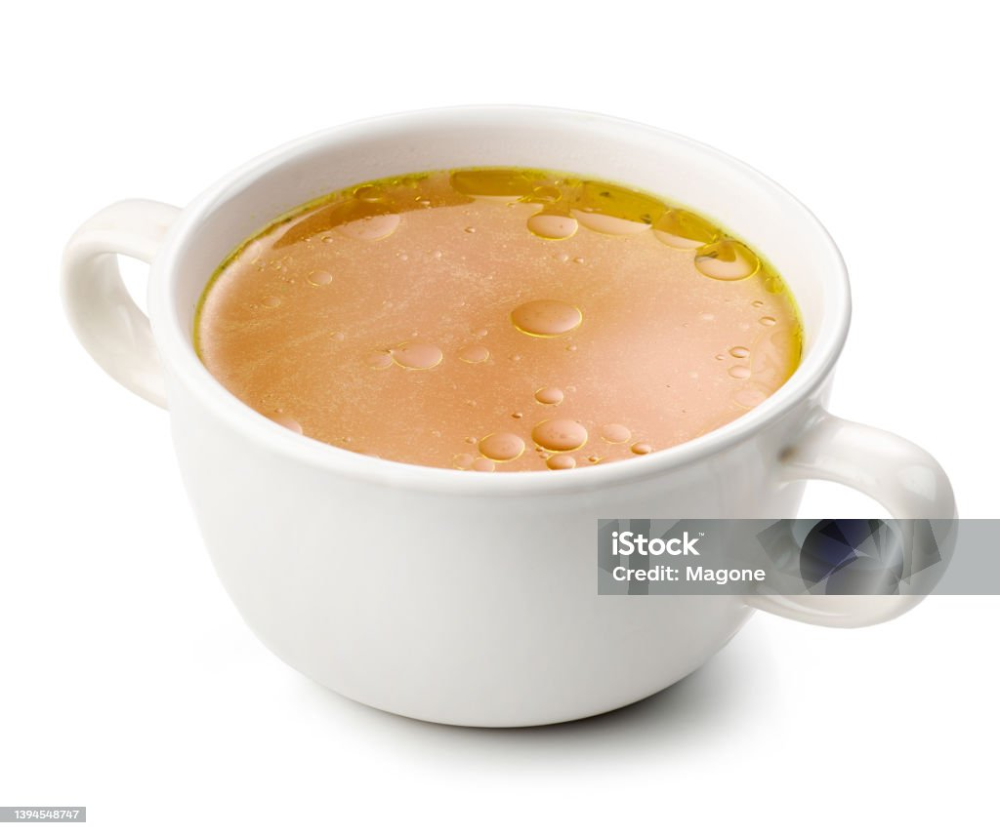

Step 6: Final Adjustments & Storage
Season to taste with salt. Cool slightly, strain, and store in jar up to 5 days in the refrigerator or up to 3 months in the freezer.


Choose a mix of:
Pre-boil the bones briefly (you can add a cup of cooking alcohol if desired) to remove excess fat and impurities.
Place bones in a large pot or slow cooker.
Season to taste with salt. Cool slightly, strain, and store in jar up to 5 days in the refrigerator or up to 3 months in the freezer.
References Pictures:
Video: How to make bone broth